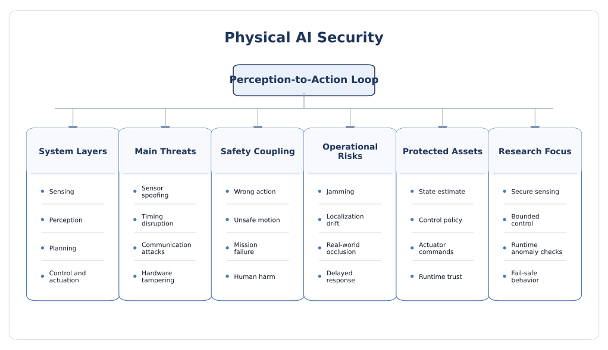

Physical AI Security
Physical AI extends intelligence into embodied and real-time systems such as robots, vehicles, drones, autonomous machines, industrial cells, and AI-enabled operational technology. In these systems, security is no longer only about model outputs. It is about how sensing, timing, control, communication, planning, and actuation interact with the physical world.
Why physical AI changes the security problem
Physical AI covers systems that do not only infer but also interact with the world. These systems perceive through cameras, lidar, radar, microphones, tactile sensors, industrial probes, or other modalities; interpret that data with predictive, generative, or agentic models; and then act through motion, control commands, communication, or workflow execution. The result is a different security regime from purely digital AI. A model error, a delayed packet, a spoofed sensor, or a corrupted controller state can change physical behavior rather than only text on a screen.
The best way to think about physical AI security is as a closed-loop trust problem. The system senses the world, interprets it, chooses an action, and then changes the world it will sense next. That loop means mistakes and manipulations can accumulate. A false perception can alter planning, the altered plan can change control behavior, and the resulting motion or actuation can create a new unsafe state. This is why security and safety become tightly coupled in embodied systems.
What belongs under physical AI
- Robotics: industrial robots, mobile manipulators, warehouse robots, humanoids, collaborative robots, and service robots.
- Autonomous vehicles and drones: systems combining perception, planning, control, localization, and communication.
- AI-enabled operational technology: industrial control, utilities, smart buildings, and cyber-physical infrastructure with AI in the loop.
- Smart spaces and embodied systems: systems where AI monitors or controls moving assets, processes, or environments.
- Human-robot teaming: systems where physical interaction with people introduces additional safety and trust constraints.
Why physical AI is different from edge AI
- Actuation is central: the system can move, steer, brake, grasp, open, inject, redirect, or otherwise affect the physical world.
- Timing matters more: even small delays or synchronization faults can change control outcomes.
- Safety coupling is unavoidable: cybersecurity events can quickly become physical hazards to people, equipment, or infrastructure.
- Environment uncertainty matters: weather, lighting, terrain, wear, human behavior, and dynamic obstacles all affect security exposure.
- System-of-systems behavior matters: vehicles, robots, sensors, operators, and backend services often interact across one control surface.
Core security goals for physical AI
- Perception integrity: the system should not be easily misled about what is present in its environment.
- Control integrity: the path from perception to planning to actuation should resist unauthorized manipulation.
- Operational availability: the system should remain functional or fail safely under attack, noise, and degraded conditions.
- State awareness: the system should detect when it is uncertain, off-nominal, or outside its validated operating envelope.
- Containment: if compromise occurs, physical impact should be bounded through safe states, rate limits, and fallback logic.
- Lifecycle assurance: deployment, calibration, updates, maintenance, and field servicing must preserve trust over time.

Threat model and physical-world attack surface
A physical-AI threat model should ask more than who can query the model. It should ask who can affect the environment, the sensors, the network, the controller, the update path, and the actuation boundary. In embodied systems, the attacker may operate physically, digitally, or through a hybrid pathway. A painted object, a spoofed GNSS signal, a jamming source, a manipulated maintenance laptop, or a compromised planning module can all influence the same system from different entry points.
Attacker positions
- Environmental attacker: manipulates physical objects, lighting, sound, RF conditions, or scene structure to mislead sensing.
- Sensor-path attacker: spoofs, jams, blinds, or perturbs cameras, lidar, radar, IMUs, GNSS, tactile sensors, or industrial probes.
- Controller or network attacker: interferes with internal buses, field networks, V2X links, telemetry, or timing synchronization.
- Local hardware attacker: probes boards, injects faults, tampers with peripherals, or replaces modules.
- Remote workflow attacker: exploits cloud, fleet-management, map, update, or planning services that influence the physical system.
- Insider or maintenance attacker: abuses calibration tools, engineering workstations, service modes, or privileged access during upkeep.
Attacker goals
- Perception deception: make the system misinterpret objects, lanes, obstacles, identities, or system state.
- Control deviation: alter path planning, actuator commands, or safety interlocks.
- Unsafe degradation: force reduced capability, confusion, oscillation, or unsafe fallback behavior.
- Availability loss: jam sensing, saturate compute, or disrupt communications until the system becomes unavailable.
- Persistence: implant malicious configuration, calibration bias, or firmware changes that survive across missions.
- Cascading physical impact: trigger downstream operational, safety, or economic consequences beyond the initial compromise.
Major threat classes
1. Sensor spoofing, jamming, and environmental manipulation
Physical AI begins with sensing, so many attacks target the sensor boundary first. Cameras may be fooled by carefully placed visual patterns, lighting artifacts, or occlusions. GNSS receivers may be spoofed. Radar or lidar can be jammed or confused. Acoustic or ultrasonic channels can be injected. Industrial sensors can be perturbed through process changes that remain within plausible ranges but shift decisions in the attacker's favor.
- These attacks can be transient and localized, making them hard to reproduce after the event.
- They often exploit weaknesses before the model itself, such as preprocessing, synchronization, or calibration assumptions.
- The same attack may affect both security and functional safety if the manipulated perception feeds control logic directly.
2. Perception-to-action pipeline compromise
In physical AI, compromise does not end at the model. The output of perception is passed to planners, policy modules, controllers, and actuators. An attacker can therefore target interfaces between those layers: object lists, occupancy maps, route costs, risk scores, control-set references, or behavioral state machines. Small semantic distortions in early stages can become large physical deviations later.
- A misdetected obstacle can change path planning.
- A spoofed localization state can change control authority or map alignment.
- A corrupted planner output can trigger unsafe but internally consistent actions.
3. Timing and real-time exploitation
Real-time behavior is part of the security boundary in physical AI. Packet delay, compute slowdown, scheduling jitter, stale sensor fusion, clock drift, or overloaded control cycles may not look like classical compromises, yet they can cause unstable or unsafe behavior. Attackers may therefore target timing as a control variable, forcing the system into operating regions where decisions are based on outdated world models.
- Latency attacks are especially dangerous in autonomous driving, drones, collaborative robotics, and industrial motion systems.
- Timing failures can combine with perception failures so that even correct classifications arrive too late to remain useful.
- Security evaluation must therefore include deadlines, synchronization, and control-loop budgets.
4. Communication and coordination attacks
Many physical-AI systems are networked: robots coordinate with supervisors, vehicles exchange data with infrastructure, drones receive mission updates, and AI-enabled OT systems consume commands from engineering or monitoring layers. Communication links thus become a major attack surface. Attackers may launch man-in-the-middle attacks, replay messages, jam links, spoof status updates, or corrupt coordination traffic between subsystems.
- Distributed autonomy increases performance but also introduces trust assumptions across nodes.
- Intermittent links and degraded connectivity can force systems into emergency or fallback modes that themselves need security review.
- Message integrity alone is not enough when the receiving system cannot semantically validate whether the message still makes sense in context.
5. Hardware tampering, fault injection, and low-level compromise
Physical AI often runs on edge hardware, so the hardware threat model remains active: side-channel leakage, glitching, debug-interface abuse, memory extraction, counterfeit components, and sensor-board tampering all matter. In embodied systems, these attacks can become especially serious because they may alter both the intelligence and the actuation pathways.
6. Calibration, mapping, and state-estimation manipulation
Many physical systems depend on calibration parameters, maps, transforms, and estimators that are not visible in a simple model-centric view. If those artifacts are biased or replaced, the system can remain internally coherent while being physically wrong. Examples include extrinsic sensor miscalibration, manipulated maps, corrupted localization priors, or tampered controller gains.
- These attacks are subtle because they may not trigger obvious alarms.
- The resulting behavior may appear like normal drift or wear unless operators have strong validation tools.
- Maintenance and servicing channels are common opportunities for such compromise.
7. Unsafe human-machine interaction
Physical AI often operates near people: drivers, pedestrians, workers, operators, and patients. Human behavior therefore becomes part of the threat surface. An attacker may exploit user trust, confuse human supervisors, induce unsafe handover, or manipulate human-robot collaboration assumptions. In some cases, the system may remain formally uncompromised yet still become dangerous because its explanations, signals, or takeover requests are misleading or poorly timed.
8. OTA, fleet, and backend-driven physical compromise
Physical systems increasingly depend on remote updates, cloud planners, telemetry pipelines, and fleet-management infrastructure. A backend breach can therefore propagate into the physical world by pushing malicious models, unsafe maps, biased calibration data, or altered policies to many devices at once. This is one reason physical AI cannot be secured only at the device level.
9. Reliability-to-security crossover
In embodied systems, security and reliability often blur together. Environmental stress, component aging, misalignment, temperature, vibration, and sensor degradation can all interact with adversarial manipulation. Attackers may exploit already weak operating regions rather than creating entirely new ones. This makes physical AI a strong example of why cross-layer assurance matters.
10. Safety bypass and recovery-path exploitation
Physical systems often include fallback modes, emergency stops, limp-home modes, or supervisory overrides. These are essential for safety, but they can also become targets. An attacker may suppress a safe stop, trigger unnecessary emergency behavior, or repeatedly force the system into degraded states that create operational disruption or dangerous operator habituation.
Countermeasures and secure design principles
Physical AI requires multi-layer defense because no single layer can absorb all risk. Robust perception alone is not enough if control timing is weak. Strong hardware is not enough if sensor trust and fleet governance are poor. The best designs combine secure sensing, trusted compute, bounded autonomy, resilient communication, runtime anomaly detection, and safe failure behavior.
1. Secure the perception boundary
- Validate sensor plausibility, consistency, and timing before high-impact decisions are made.
- Fuse multiple sensing modalities where one channel alone is easy to spoof or jam.
- Track sensor health, calibration drift, and synchronization quality continuously.
- Use environment-aware confidence handling rather than assuming all sensed inputs are equally trustworthy.
- Preserve evidence paths for forensic review in high-consequence deployments.
2. Protect the full perception-planning-control chain
- Treat intermediate artifacts such as maps, detections, trajectories, and control references as security-sensitive data.
- Authenticate and integrity-protect messages passed between perception, planning, and control modules.
- Use sanity bounds and physical invariants so impossible or unsafe states are rejected before actuation.
- Prefer architectures that can degrade gracefully when one module becomes uncertain rather than forcing brittle all-or-nothing behavior.
3. Build timing-aware security
- Define end-to-end latency budgets as part of the security and safety case.
- Monitor for stale data, delayed fusion, synchronization loss, and compute overload.
- Separate best-effort AI tasks from hard real-time control paths when possible.
- Test security under degraded timing conditions, not only nominal ones.
In physical systems, a correct answer that arrives too late can be operationally equivalent to a wrong answer.
4. Use hardware-rooted trust and secure lifecycle controls
- Apply secure boot, measured boot, attestation, and rollback protection for embodied devices.
- Protect model files, control software, maps, calibration artifacts, and credentials at rest and during updates.
- Control servicing and maintenance access with strong identity, logging, and separation of duties.
- Lock down debug interfaces, engineering modes, and factory backdoors before deployment.
5. Constrain autonomy and actuation
- Bound what actions the system can take under uncertainty or degraded sensing.
- Use rate limits, safety envelopes, and policy constraints around motion or actuator authority.
- Require stronger confirmation or supervisory approval for high-consequence actions where feasible.
- Design fail-safe or fail-operational modes explicitly rather than assuming one generic fallback is enough.
6. Harden communications and distributed coordination
- Protect V2X, fieldbus, telemetry, and robot coordination channels against spoofing, replay, and unauthorized command injection.
- Validate both message origin and message plausibility in physical context.
- Plan for degraded connectivity and define secure offline behavior in advance.
- Keep cloud dependence bounded so temporary connectivity loss does not force unsafe operation.
7. Runtime monitoring and anomaly detection
- Monitor for unusual sensor disagreement, control oscillation, repeated overrides, timing violations, and unexpected state transitions.
- Combine cyber telemetry with physical-process telemetry so compromise is not interpreted only as a software event.
- Use health monitoring for hardware, sensing, and control modules alongside ML anomaly detection.
- Ensure alerting and diagnostics are understandable to operators under time pressure.
8. Design human oversight for real operations
- Make system state, uncertainty, and intent visible to operators.
- Design takeover and intervention paths that are timely, comprehensible, and realistic under workload.
- Avoid overloading humans with constant low-value warnings that produce habituation.
- Train operators for degraded and attack-like situations, not only nominal workflows.
9. Validate under combined safety-security conditions
- Test adversarial perception, communication faults, timing stress, and hardware faults together where relevant.
- Use scenario-based evaluation rather than only benchmark accuracy or isolated penetration tests.
- Account for environmental variation such as weather, lighting, clutter, and human interaction.
- Measure both digital failure metrics and physical consequence metrics.
Open research challenges and future directions
Physical AI is one of the hardest AI-security domains because it combines learning systems, cyber-physical systems, hardware trust, and safety engineering. Many good techniques exist for individual layers, but integrated assurance is still immature. The major open problem is how to evaluate and certify real embodied systems under realistic combined threats rather than only isolated benchmarks.
1. Security and safety are still evaluated too separately
Many studies analyze adversarial ML or robotics safety in isolation, yet real embodied failures emerge from their interaction. Future work needs stronger joint assurance methods that connect cybersecurity events to physical consequence and recovery behavior.
2. Closed-loop evaluation remains difficult
Benchmarking perception alone misses how attacks propagate through planning and control. The field still needs better ways to test full-loop performance under uncertainty, adversarial manipulation, and timing stress.
3. Sensor-physics-aware security is still immature
Many AI security benchmarks use digital perturbations, while real physical attacks exploit lighting, weather, reflectivity, vibration, RF conditions, or process dynamics. Better evaluation must connect model robustness with real sensor physics and deployment context.
4. Timing and control are underrepresented in AI-security literature
Latency, synchronization, and scheduling strongly affect physical outcomes, yet they are often treated as systems concerns rather than security concerns. This separation is increasingly unrealistic for embodied AI.
5. Human oversight is difficult to design well
In vehicles, robots, and AI-enabled OT, human supervision is often the final safeguard. But takeover timing, attention limits, unclear explanations, and overtrust in automation all complicate this layer. Better socio-technical security design is needed.
6. Fleet and backend risk can dominate local hardening
Strong local devices can still fail if updates, maps, calibration data, or remote policies are compromised centrally. Physical AI therefore needs lifecycle and fleet-oriented assurance, not only device-level hardening.
7. Reliability and adversarial behavior are entangled
Aging, drift, temperature, mechanical wear, and misalignment can create weak operating regions that attackers exploit. Research should increasingly treat robustness, reliability, and security as one cross-layer problem rather than three separate ones.
8. Standards and metrics are still emerging
Measurement science for perception, agility, safety, and robot performance is improving, but widely accepted security metrics for embodied AI are still limited. Stronger shared benchmarks and assurance cases will be important as deployment expands.
9. Future direction
- Integrated safety-security assurance for perception-to-action loops.
- Scenario-based benchmarking that combines sensing, timing, communication, and actuation stress.
- Sensor-physics-aware defenses grounded in real deployment environments.
- Runtime monitors that fuse cyber and physical anomaly signals.
- Secure lifecycle methods for maps, calibration, OTA updates, and maintenance tooling.
- Cross-layer work connecting physical AI with cloud orchestration, edge devices, hardware trust, and agentic autonomy.
Selected readings and frameworks
The references below are strong starting points for connecting embodied AI, robotics, cyber-physical security, and operational safety considerations.
- CSET: Physical AI — A Primer for Policymakers on AI-Robotics Convergence
- NIST Robotics Program
- NIST Measurement Science for Robotics and Autonomous Systems
- Principles for the Secure Integration of Artificial Intelligence in Operational Technology
- ENISA-JRC: Cybersecurity Challenges in the Uptake of Artificial Intelligence in Autonomous Driving
- ENISA: Multilayer Framework for Good Cybersecurity Practices for AI
- MITRE ATLAS
- NIST AI 100-2: Adversarial Machine Learning Taxonomy and Terminology